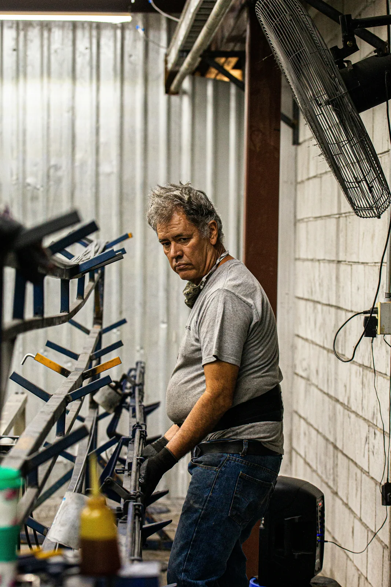

Analysis
Find the places where procedure ends and memory begins.
Program file
Not a mascot. Not a joke. A recurring operational condition in which the system still works, provided the right person is nearby and in a generous mood.

Scope
Find the places where procedure ends and memory begins.
Identify what breaks when the person who knows is unavailable, busy, or tired of being infrastructure.
Turn informal routing into records before the workaround becomes the only map.
Operational risk
EARL belongs in the record because the condition repeats: decisions become urgent, context becomes partial, and informal workarounds quietly become policy. Related sightings are kept in the Field Notes annex.